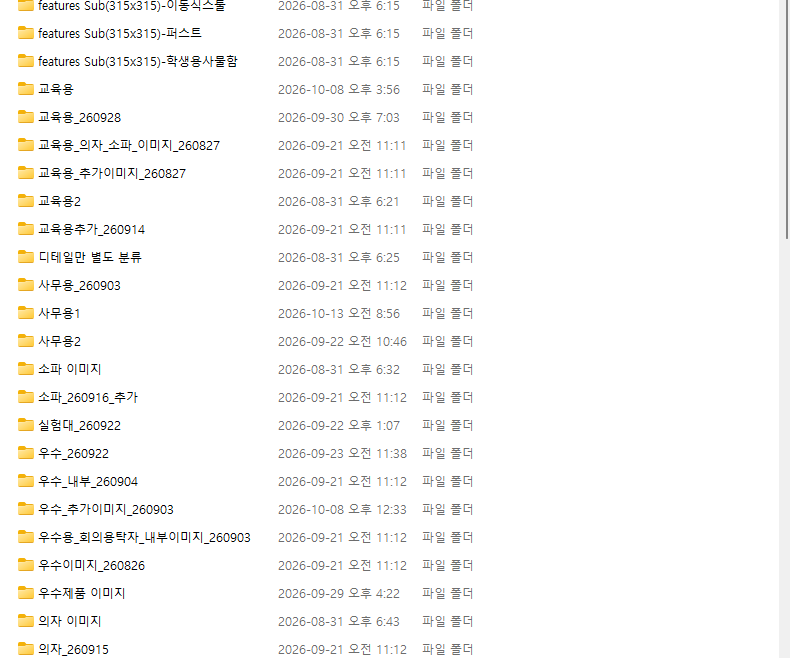
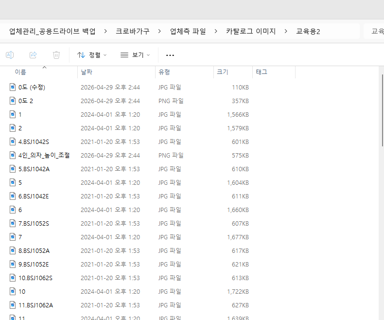
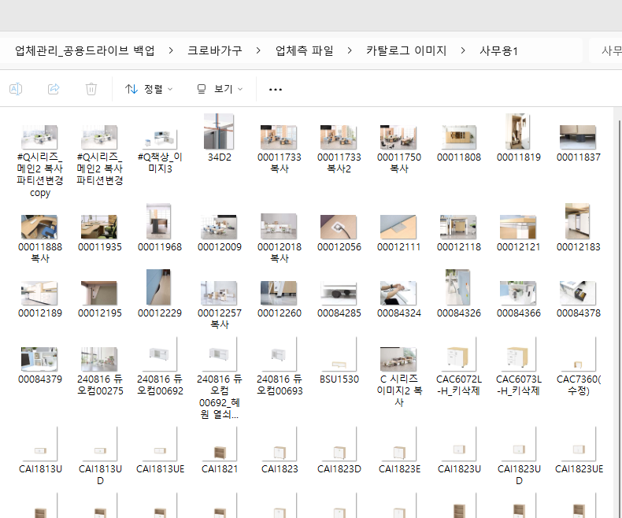
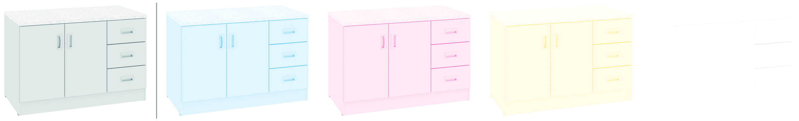

MT · 카탈로그 이미지 개선 리뷰
다음 카탈로그는
이미지부터 바꿉니다
받은 이미지의 지금 상태를 점검하고
라벨링 규칙과 받는 기준을 함께 정합니다
2026.11.4 (수) · 베이스 · 크로바가구 2026 vol.3 카탈로그
01 · 현재 상태 ① 폴더와 파일명
이미지 7,502장, 찾고 고르는 데 시간이 들었습니다
78개
폴더 · 받을 때마다 새 폴더
44%
번호만 있는 파일명 (3,314장)
1,651장
내용이 똑같은 사본 (2.2GB)
565개
이름은 같은데 내용이 다른 파일
553장
‘복사·copy·사본’이 붙은 파일

폴더 · 교육용 · 교육용2 · 교육용_260928 · 교육용추가_260914…

파일명 · ‘1’, ‘0도 (수정)’과 ‘10.BSJ1062S’가 한 폴더에

종류 · 단품·연출·디테일이 한 폴더에 (디테일 전용 폴더는 1개뿐)
크로바가구 카탈로그 이미지 개선 리뷰 · 02 · 업체측 파일 › 카탈로그 이미지 전체 점검 (2026.11.3 기준, 파일 7,588개 · 17.3GB)
02 · 현재 상태 ② 인쇄에 쓴 이미지의 크기와 CMYK
인쇄 이미지 절반이 400px, 흰색 제품 81장은 K가 없었습니다
① 절대 크기
인쇄에 쓴 이미지 2,733개 중
48%
긴 변 450px 미만 (1,318개)
웹용 400×400 그대로 1,251개
긴 변 → 인쇄할 수 있는 크기
| 긴 변 | 권장 300ppi | 한계 200ppi |
|---|---|---|
| 400px | 3.4cm | 5.1cm |
| 1,000px | 8.5cm | 12.7cm |
| 2,000px | 16.9cm | 25.4cm |
| 3,000px | 25.4cm | 38.1cm |
② CMYK 상태

원본
C 평균 13%
M 평균 9%
Y 평균 10%
K 0%
회색 그림자와 윤곽을 K 없이 C·M·Y 세 색을 겹쳐서만 만들고 있어, 인쇄하면 색이 틀어지거나 윤곽이 흐려집니다.
81개
흰색 제품인데 K 없음 (사무용 33 · 교육용 37)
12개
유채색인데 C·M·Y 중 하나 없음 (스와치 스캔 3장 × 4개 파트)
62%
RGB 그대로 배치 (1,695개, 대부분 400×400)
파트마다 차이가 큼
1,000px 미만 비율: 의자 69% · 교육용 55% · 사무용 53%
받은 원본도 1,173장은 부족
웹용 외 4,345장 중 27%가 긴 변 1,500px 미만
늦게 발견
해상도 부족을 10/8, 인쇄 파일 마감 5일 전에 확인
크로바가구 카탈로그 이미지 개선 리뷰 · 03 · 인쇄 패키지(261020) 7개 파트 Links 이미지 2,733개 · ‘없음’ = 잉크 5% 넘는 픽셀이 0.1% 미만
03 · 개선 ① 라벨링 규칙
가장 중요
이미지 라벨링이 끝난 뒤에 디자인을 시작합니다
라벨 규칙 (안)
교육용_ELCBA8050DL_단품_01.jpg
교육용_ELCBA8050DL_연출_01.jpg
교육용_ELCBA8050DL_디테일_01.jpg
- 폴더 = 카탈로그 파트 하나 (차수·날짜 폴더 없음)
- 파일명 = 모델코드_종류_번호, 01이 대표 이미지
- 종류 = 단품·연출·디테일 세 가지
- 바뀐 이미지는 같은 이름으로 교체, 사본 만들지 않기
진행 방식
- 라벨 규칙은 착수 전에 함께 합의
- 단품·연출·디테일 이미지를 전부 라벨링해서 전달
- 라벨링 완료를 확인한 뒤 디자인 착수
- 받는 즉시 누락·저해상 목록을 회신
- 라벨링 파일을 받기 전까지 편집은 시작하지 않음
(이 기간은 작업 기간에서 제외)
토론
파일명에 모델코드를 쓰려면, 신제품처럼 코드가 아직 없는 이미지는 어떻게 부를까요?
크로바가구 카탈로그 이미지 개선 리뷰 · 04 · v1 ‘착수 · 이미지’ 제안을 규칙 예시와 함께 정리
04 · 개선 ② 받는 기준과 점검
받는 기준을 정하고, 받는 즉시 점검합니다
해상도
긴 변 2,000px 이상, 표지·크게 쓰는 컷은 3,000px
원본
촬영·보정 원본 파일. 웹용 축소본, 카톡 캡처는 받지 않기
배경
단품은 흰 배경, 연출·디테일은 파일명으로 구분
자동 점검
받는 날 베이스가 누락·저해상·중복 목록을 뽑아 회신
| 함께 논의할 것 | 내용 |
|---|---|
| 라벨 규칙 | 폴더·파일명 형식, 코드 없는 신제품 이름 |
| 받는 기준 | 최소 해상도, 원본 범위, 배경 기준 |
| 이미지 전달 시점 | 라벨링 완료 파일을 넘기는 시점, 이후 추가분 처리 |
| 부족한 이미지 | 저해상 1,173장 중 재촬영·원본 찾기 대상 |
크로바가구 카탈로그 이미지 개선 리뷰 · 05 · 기준 수치는 제안이며 오늘 논의로 확정